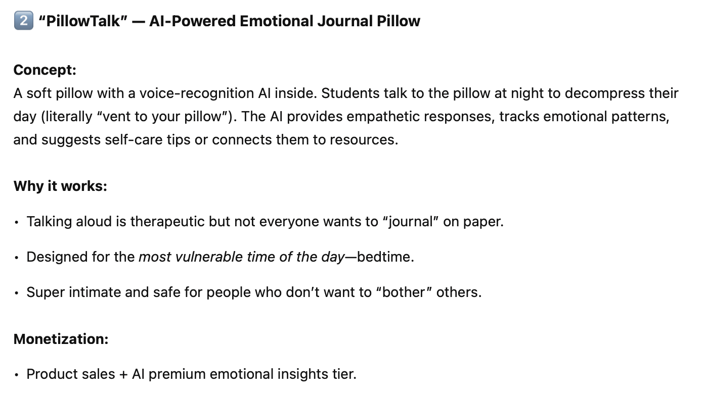
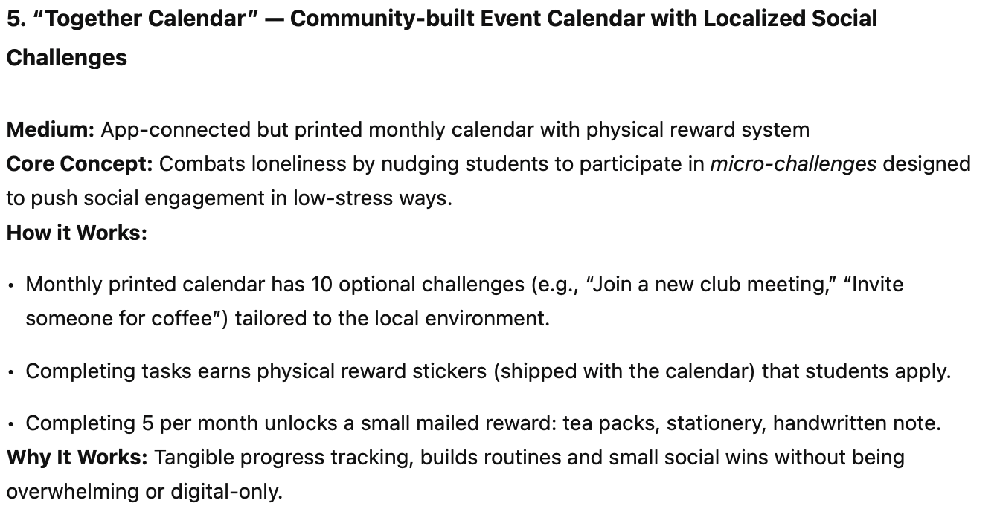

Understanding objects with clear affordances and constraints
Another challenge with AI-generated ideas is their feasibility. While some argue that novelty outweighs feasibility in AI-driven ideation—since humans find it easier to identify impractical ideas than to generate truly novel ones. However, feasibility is often intertwined with idea quality. An idea that is too ambitious to be realistically implemented ultimately lacks value, as it remains purely conceptual without the potential for real-world impact.
For example, this is an infeasible idea generated by ChatGPT:
MorphBag: The Auto-Adaptive Tote A tote with kinetic fabric technology that expands or contracts, creating structured compartments when needed. Hidden micro-thread tensioners stabilize items like laptops and disappear for free-form storage. No more black hole bags—just seamless organization that adapts instantly to what you carry.
Although this idea appears bold, it’s clear that an average person wouldn’t have the capability to develop “kinetic fabric technology” at a reasonable cost. Therefore, I want to ensure that all ideas generated by this tool maintain a baseline level of feasibility, meaning they can be realistically achieved by an average person with a reasonable amount of effort and resources.

Selecting the best medium for product ideas
Understanding objects with clear affordances and constraints is not just important for evaluating feasibility, it’s also essential for choosing the most appropriate medium for product ideas. When we break down the formation of a product idea, it consists of two key parts:
- The ideology part, which defines the concept at a high level.
- The implementation part, which materializes the concept by selecting the most suitable medium to bring the product to life.
Our first two attempts of addressing AI’s weakness in looking for nuanced connections and psychological considerations deal with the ideology part in the ideation process, while this attempt, helping AI to materialize the concept by choosing the best medium, falls into the implementation part of the process.
It’s common to feel intrigued by a product’s concept but ultimately disappointed by its execution. This often indicates a disconnect between the idea and its materialization, where the designer hasn’t achieved the best possible integration between concept and medium. To address this, I’m trying to leverage prompt engineering to guide LLMs in pinpointing the most suitable medium for an idea while filtering out less effective options.
But before diving into the prompt strategies, I first took some time to analyze those high-quality product ideas, aiming to find some rules for figuring out the most appropriate integrations between concept and medium.
- The medium is conceptually relevant to the product idea. A well-designed product seamlessly connects its medium to its core concept. The material, form, or technology used should feel intuitive and meaningfully enhance the idea, rather than being an arbitrary choice.
- The medium or technology is empowering the user and intuitive to use. It adds value to the product instead of creating burdens to users.
- The medium or technology shouldn’t be too hard to obtain or recreate.
- The mediums chosen for different product ideas should be diverse and varied. While AI-powered tools are becoming increasingly prevalent and can serve as a one-size-fits-all solution for many concepts, they shouldn’t be the default direction that LLMs automatically turn to.
With these insights in mind, I worked to embed these precautions into my prompt engineering. Drawing inspiration from Dr. Ethan Mollick’s Prompt Library, I added a section called “Reminders” designed to nudge the LLM toward generating product ideas that align with predetermined directions and guidelines.
Reminder:
• Keep the medium intimately tied to the core concept: Avoid arbitrary materials or formats; the chosen medium should feel like a natural extension of the idea.
• Empower the user, not complicate their experience: Any technology or form factor should make the product easier to use, more meaningful, and not add unnecessary complexity.
• Ensure the medium is realistically achievable: Favor accessible materials and technologies that users or producers can reasonably source, implement, or replicate without undue complexity or cost.
• Strive for variety: Challenge yourself to explore different mediums or technologies, avoiding repetitive defaults (like always suggesting AI solutions). Diversity sparks more inventive and tailored products. AI, AR/VR, NFC-related solutions should be your last resort only if you can’t come up with better ideas.
A Trial run
I ran a trial with the model using two approaches: a base prompt and an advanced prompt.
With the base prompt, the product ideas generated were less feasible and lacked diversity.

In contrast, the advanced prompt produced ideas that integrated a wider range of mediums with stronger connections to the product concepts.

However, the overall quality still fell short of my expectations, as there were noticeable gaps between the concepts and their materialization. Based on this trial, I plan to continue refining the prompt to further improve alignment and depth in the generated ideas.